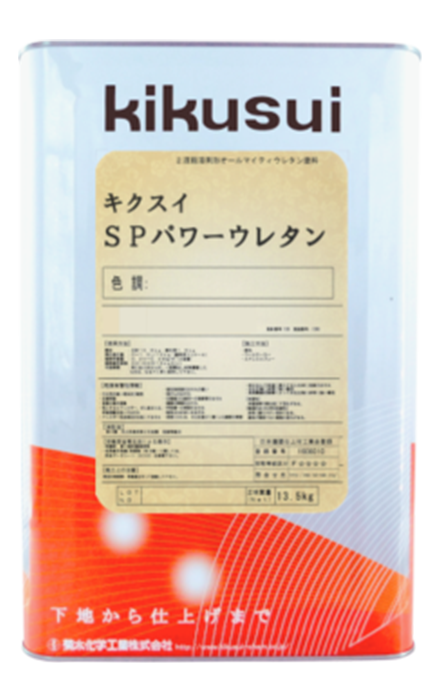
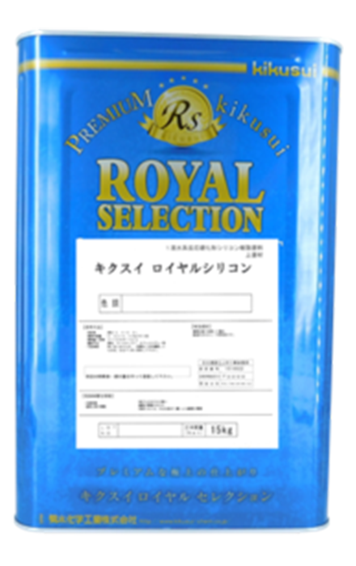
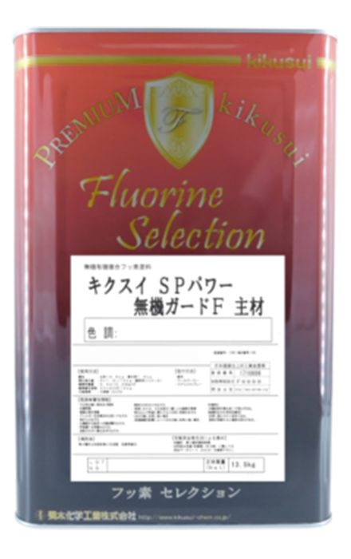

REASON
星野美装が選ばれる3つの理由
01
下請けに出さない自社施工
ご相談をいただいた家は、代表の星野が自ら現場に立って塗ります。間に会社をはさまないので、話した内容がそのまま仕上がりに届き、余計な中間マージンもかかりません。
代表のメッセージを読む →
02
いちばん大事な、下地処理
塗装の工程でいちばん大事なのは、塗る前の下地処理です。この差は、塗り終わった直後には見えなくても、数年たつと目に見えてきます。だから、ここにいちばん時間をかけます。
工事の流れを見る →
まずは「見てもらうだけ」でも大丈夫です。
現地調査・お見積りは無料。無理な営業はいたしません。
PRICE
外壁塗装の料金の目安
30坪の戸建て（外壁 約100㎡）・足場込みの場合。足場・高圧洗浄・下地処理・3回塗り・付帯部塗装・近隣あいさつまで含みます。

ウレタン
耐用年数の目安 約8〜10年
55〜65万円
人気 ／ コミコミプラン

シリコン
耐用年数の目安 約10〜15年
65〜80万円

フッ素
耐用年数の目安 約15〜20年
80〜100万円

無機
耐用年数の目安 約20〜25年
95〜120万円
※群馬県の相場をもとにした目安です。正確な金額は、無料の現地調査のあとにお出しします。
WORKS
高崎市の施工事例


FAQ
よくある質問
Q見積りは本当に無料ですか？
はい、現地調査とお見積りは無料です。お見積りのあとにお断りいただいても、費用はかかりません。
Q塗り替えの時期の目安は？
外壁塗装の寿命の目安は10〜15年です。色あせ・ひび割れ・さわると白い粉がつくなどのサインがあれば、早めの点検をおすすめします。
Q工事は下請けの業者さんが来るのですか？
いいえ。下請けに出さず、代表の星野が自ら現場に立って塗ります。ご相談から仕上がりまで、同じ人間が責任を持ちます。
BLOG
ブログ
AREA
対応エリア
群馬県高崎市を中心に対応しています。近隣の市町村の方も、まずはお気軽にご相談ください。
- 所在地
- 群馬県高崎市下小塙町882
- 電話
- 027-334-5346
- FAX
- 027-315-5346